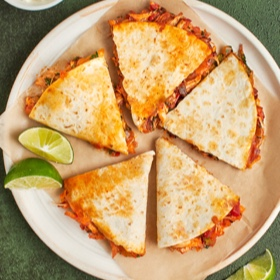

← All recipes
Chipotle Chicken Quesadillas

Servings: Servings: 6 · Prep: 30 minutes · Cook: 15 minutes
Ingredients
- 3 tablespoons olive oil
- 1 large red onion, chopped (about 1½ cups)
- 4 garlic cloves, minced
- ⅓ cup minced chipotle peppers in adobo sauce (you'll need about 6 chilis)
- 4 vine-ripened tomatoes (about 1¼ pounds), seeded and diced
- 3 scallions, thinly sliced
- 2 tablespoons honey
- 2½ cups cooked shredded chicken (white and/or dark meat)
- 1 teaspoon salt
- ½ cup chopped cilantro
- 6 10-inch diameter flour tortillas
- 4 cups shredded sharp cheddar cheese
- Sour cream, for serving (optional)
- Lime wedges, for serving (optional)
Directions
- Begin by cooking the red onions and garlic in olive oil.
- Add the diced tomatoes and minced chipotle peppers.
- Cook until the liquid is gone and the mixture is thickened.
- Stir in the shredded chicken, salt, honey, green onions and cilantro. Keep the filling warm while you prepare the quesadillas. (Note: the chicken mixture can be made up to two days ahead of time.)
- Heat a flour tortilla on a griddle or in a sauté pan. Cover the entire tortilla with cheese and spread the filling over one side.
- When the cheese is mostly melted, fold the tortilla over the filling into a half-moon shape.
- Cook until crisp and golden, a few minutes per side. Repeat with the remaining tortillas. Serve immediately with sour cream and lime wedges, if desired.
- In a large sauté pan, heat the olive oil over medium heat. Add the onion and sauté until soft, about 5 minutes. Add the garlic and cook 1 minute more. Stir in the chipotle peppers and tomatoes. Cook until most of the liquid from the tomatoes has evaporated and the mixture is thickened, stirring often, about 20 minutes. Stir in the scallions, honey, chicken, salt and cilantro. Keep warm.
- Heat a sauté pan over medium heat and spray lightly with nonstick cooking spray. Lay a tortilla in the pan and heat until hot to the touch but not crisp (air pockets may form). Flip the tortilla over, then sprinkle ⅔ cup of the cheese evenly overtop, being careful to keep it off the pan. Spread a generous ½ cup of the chicken mixture over half of the tortilla. When the cheese is mostly melted, fold the tortilla over to cover the filling and form a half-moon shape. Cook until the tortilla is crisp and golden and the cheese is melted, adjusting the heat as necessary, a few minutes per side. Repeat with the remaining tortillas. Let the quesadillas rest a few minutes to allow the filling to set, then cut into wedges. Serve with sour cream and lime wedges, if desired.
Notes
Note: If you have a large griddle, use that to make the quesadillas so you can make a few at a time. Also, be sure to serve your quesadillas hot of the pan (or off the griddle), otherwise, they’ll get soggy and the cheese will harden. If this does happen, you can pop them in a 350°F degree oven to heat them up, but they won’t be as crisp and gooey as they are fresh.
Note: The nutritional information does not include the optional ingredients.
Make-Ahead/Freezing Instructions: For the crispiest texture, the quesadillas should be assembled and cooked just before serving. However, the chicken mixture can be prepared up to two days in advance, cooled, covered, and stored in the refrigerator. Leftover quesadillas can be frozen for up to three months. To serve, defrost them in the refrigerator and then reheat, wrapped in foil, in an oven preheated to 350°F (175°C) until hot, which should take 15 to 20 minutes.
Original source: onceuponachef.com